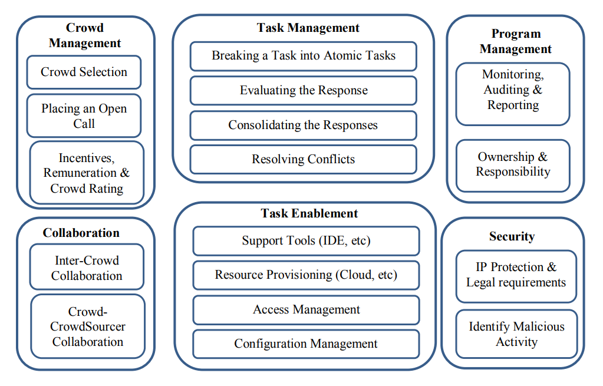

shrikanth.about()
Hi, I am a II year PhD student
at North Carolina State University, Raleigh. I work with Dr.Menzies
in his super cool lab RAISE
where we explore synergies between AI and SE.
shrikanth.overview()
shrikanth.evolve()
shrikanth.skills()
shrikanth.showOff()
shrikanth.showPublications()
- Anurag Dwarakanath, N. C. Shrikanth, Kumar Abhinav, and Alex Kass. 2016.
Trustworthiness in enterprise crowdsourcing: a taxonomy & evidence from data . (ICSE
'16).
 "In this paper we study the trustworthiness of the crowd for crowdsourced software development. Through the study of literature from various domains, we present the risks that impact the trustworthiness in an enterprise context. We survey known techniques to mitigate these risks. We also analyze key metrics from multiple years of empirical data of actual crowdsourced software development tasks from two leading vendors. We present the metrics around untrustworthy behavior and the performance of certain mitigation techniques. Our study and results can serve as guidelines for crowdsourced enterprise software development."
"In this paper we study the trustworthiness of the crowd for crowdsourced software development. Through the study of literature from various domains, we present the risks that impact the trustworthiness in an enterprise context. We survey known techniques to mitigate these risks. We also analyze key metrics from multiple years of empirical data of actual crowdsourced software development tasks from two leading vendors. We present the metrics around untrustworthy behavior and the performance of certain mitigation techniques. Our study and results can serve as guidelines for crowdsourced enterprise software development."
- Anurag Dwarakanath, Upendra Chintala, Shrikanth N. C., Gurdeep Virdi, Alex Kass, Anitha Chandran, Shubhashis Sengupta, and Sanjoy Paul. 2015 . CrowdBuild: a methodology for enterprise software development using crowdsourcing .(CSI-SE ICSE '15). "We present and evaluate a software development methodology that addresses key challenges for the application of Crowd sourcing to an enterprise application development. Our methodology presents a mechanism to systematically break the overall business application into small tasks such that the tasks can be completed independently and in parallel by the crowd. Our methodology supports automated testing and automatic integration. We evaluate our methodology by developing a web application through Crowd sourcing. The methodology was tested through two Crowd sourcing models: one through contests and the other through hiring freelancers. We present various metrics of the Crowd sourcing experiment and compare against the estimate for the traditional software development methodology." 
shrikanth.showPatents()
- Method and system for visual requirements and component reuse driven rapid application composition "A rapid application developer system is disclosed that provides a development platform configured to generate an application manifest document for developing a new target application within a certain industry. The application manifest is generated based on components identified from previously developed applications within the same industry as the target application."
- Automated inference of evidence from log information "A device may receive a first sample. The device may identify a plurality of second samples that are similar to the first sample. The plurality of second samples may correspond to service tickets that have previously been processed. The device may obtain or determine log information identifying a plurality of events associated with the first sample. The device may determine respective probabilities of occurrence corresponding to the plurality of second samples. A probability of occurrence, for a particular second sample, may identify a likelihood of receiving a corresponding service ticket within a particular time period of occurrence of the plurality of events. The device may assign ranks to the plurality of second samples based on the respective probabilities of occurrence. The device may provide information identifying the ranks and the plurality of second samples."
shrikanth.listCertificates()
- Sun Certified Java Programmer
- Sun Certified Web Component Developer
shrikanth.showTAInfo()
- CSC 440 Database Management Systems
- CSC 495 Software Testing
- CSC 510 Software Engineering